AI Academy · Level 4 · Grade 9 · Week 28 · Student lesson
Learning Curves
Learn to understand, design, build, test and explain AI systems responsibly.
Project: Responsible Plant Classifier
Before you start
Week 27: compare results under shared evaluation conditions.
Plan time to read, investigate and explain. Keep predictions separate from observations.
Student lesson · 1 of 17
Your mission
Your learning target
I can read training-size learning curves.
I can describe variability across repeated development runs.
I can avoid unsupported guarantees from a trend.
Remember before reading
Close your notes first. A rough first answer helps us choose the right starting point; it is not a score for your ability.
Without opening the old lesson, explain one key idea from Overfitting. Give an example and a mistake that the idea helps you avoid.
Without opening the old lesson, explain one key idea from Metrics Match Consequences. Give an example and a mistake that the idea helps you avoid.
Without opening the old lesson, explain one key idea from Train a Regression Model. Give an example and a mistake that the idea helps you avoid.
After trying, check the relevant lesson or ask your teacher. Change the part of your explanation that the evidence shows was wrong.
Learning curves plot performance against training size or effort and help distinguish underfitting, overfitting, and data limitation.
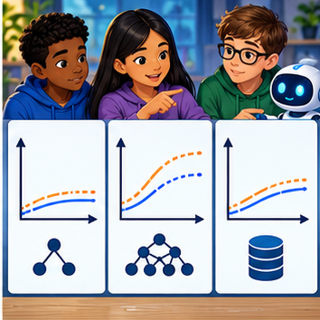
Builder name and experiment date:
Readiness for the connected explanation
What does validation loss add to training loss?
This week’s end goal
By the end, I can explain learning curves using a traced example and a stated limitation.
Student lesson · 2 of 17
Notice the evidence
PICTURE ENTRY
Notice → Predict → Explain
Begin with visible evidence; do not explain more than the picture and information support.
Name three visible details without interpreting them.
Predict the data, model, or evaluation decision being made.
Identify one hidden assumption that could change the result.
State what evidence would confirm or reject your prediction.
My prediction and supporting evidence:
A closer explanation
A learning curve asks how performance changes as the amount of training evidence grows. Keep the validation protocol, model settings and metric comparable. Use subsets of training only; never add validation rows into the training subsets. Multiple repeats reveal sensitivity to sample selection or model randomness.
Use fictional classroom data throughout this investigation. Keep the task, units, reference labels and data split visible as you reason. Earlier weeks supplied the model-building process; this week examines learning curves and variability.
Student lesson · 3 of 17
See how it works
ML MECHANISM
Input → Model → Evidence
Trace the information, fitted behavior, and evaluation proof separately.
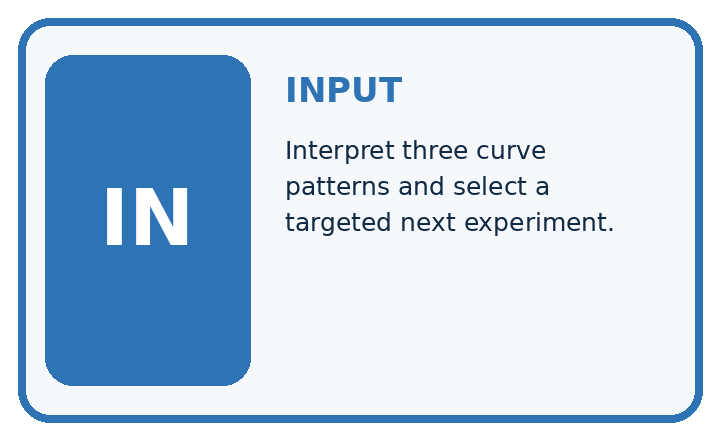
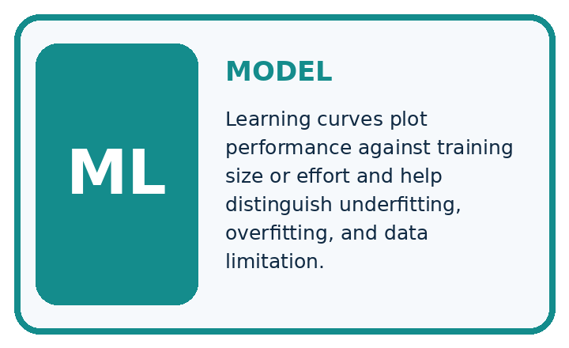
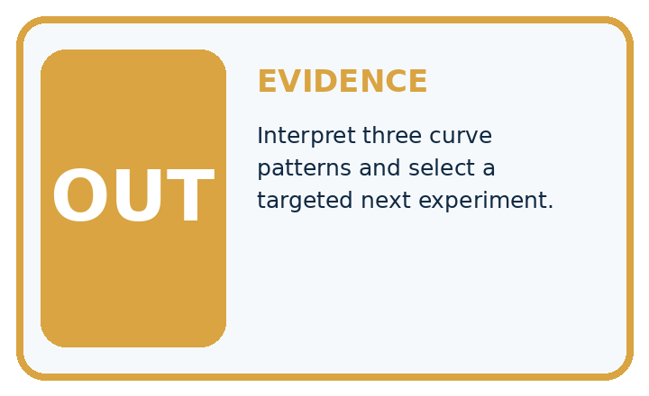
QUESTION Interpret three curve patterns and select a targeted next experiment.
MODEL IDEA Learning curves plot performance against training size or effort and help distinguish underfitting, overfitting, and data limitation.
PROOF NEEDED Use an unseen case, visible calculation, error analysis, and a stated limitation.
Draw a fresh data → model → prediction → evaluation trace:
A closer explanation
At training sizes 10, 20, 40, validation MAEs across three declared repeats are [7, 9, 8], [5, 7, 6], [4, 6, 5]. Means are 8, 6, 5 and ranges 2, 2, 2. Mean training MAEs are 1, 2, 3. Validation improves as training grows, while training error rises because fitting more varied examples can be harder.
Before continuing, underline the decision rule and circle the evidence that supports the conclusion. Explain the example to a partner without replacing the counts or conditions with a stronger claim. Keep the distinction between an observed result and a proposed next step.
Connect the picture and the explanation
Point to the input, the deciding step and the result in this week’s visual. Explain the same step in ordinary words. A picture helps when you can say what each part represents.
Student lesson · 4 of 17
Compare the cases
EVALUATION DESIGN
Four Tests, Four Kinds of Evidence
A system is not understood until it survives more than one comfortable example.


NORMAL Expected data and expected behavior.
BOUNDARY Value close to a threshold, ambiguous label, or uncertain prediction.
MISSING Necessary field, label, source, or measurement is unavailable.
SHIFTED New lighting, species, device, subgroup, or time condition.
Which case most threatens today's claim, and why?
Change one thing in the pictured case
Change: A30-plant experiment gives errors [4, 4, 4].
Prediction: Mean remains4; this additional size does not improve the observed mean over20 plants.
Reason: Learning curves are measured patterns, not a guarantee of improvement at every data size.
Student lesson · 5 of 17
Words that unlock the idea
VOCABULARY
Words You Can Calculate and Defend
A definition matters when it lets you interpret a new dataset, model, or result.
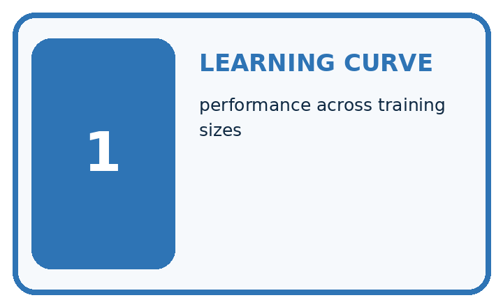
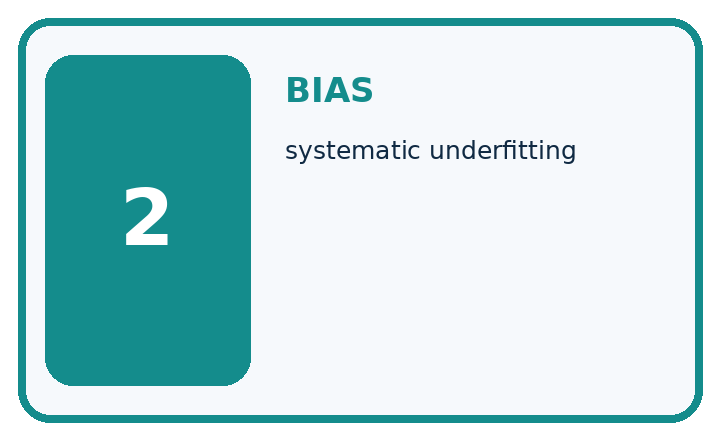
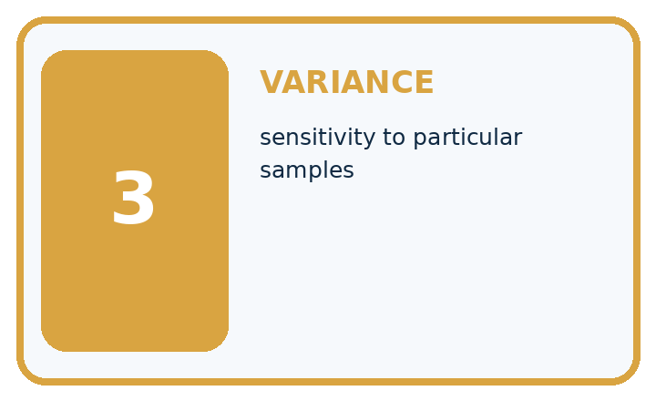
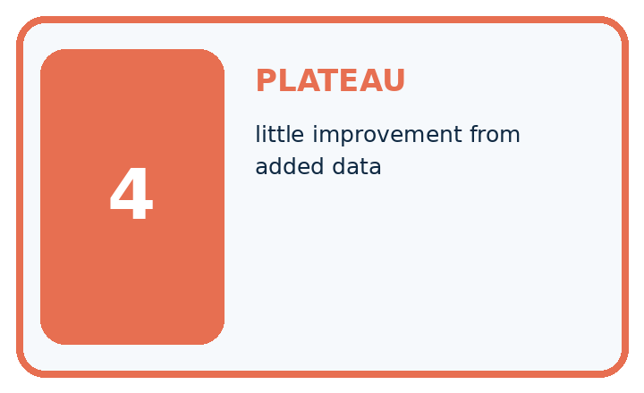
| Term | Precise meaning | My ML example |
|---|---|---|
| learning curve | performance across training sizes | |
| bias | systematic underfitting | |
| variance | sensitivity to particular samples | |
| plateau | little improvement from added data |
Repair the claim using a definition, calculation, or test record:
Words used in the closer explanation
| Word | Meaning |
|---|---|
| Learning curve | Performance plotted against training sample size |
| Repeat | Another run under a recorded procedure |
| Variability | How much results differ between runs |
| Range | Maximum minus minimum of observed values |
Student lesson · 6 of 17
Follow a worked example
WORKED EVIDENCE
Reason Step by Step
Predict first. Then check each step. A correct answer without visible evidence cannot be audited.
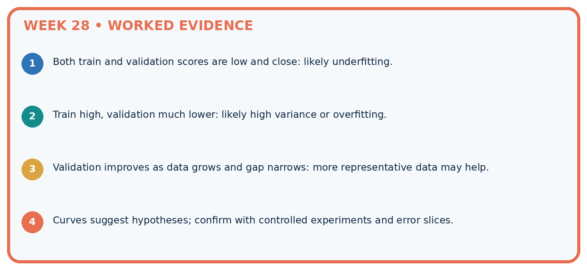
STEP 1 Both train and validation scores are low and close: likely underfitting.
STEP 2 Train high, validation much lower: likely high variance or overfitting.
STEP 3 Validation improves as data grows and gap narrows: more representative data may help.
STEP 4 Curves suggest hypotheses; confirm with controlled experiments and error slices.
Recalculate, retrace, or restate the evidence independently:
A closer explanation
Learning curves and variability at a glance
Learn from the worked case
Cover the result before checking it. Say what is given, choose the procedure, and follow one step at a time. Then uncover the result and explain your first mismatch. Ask why a step is allowed, not only what number it produces.
A pictorial worked case: Learning Curves
Read a learning curve with repeated-run spread rather than drawing a certainty arrow.
The facts we will use
At 10 training plants validation errors across3 runs are [6, 5, 7]; at 20 plants errors [4, 5, 3], on the same 10-case validation set.
All inputs and outcomes in this worked example are invented classroom data; no real model run is claimed.
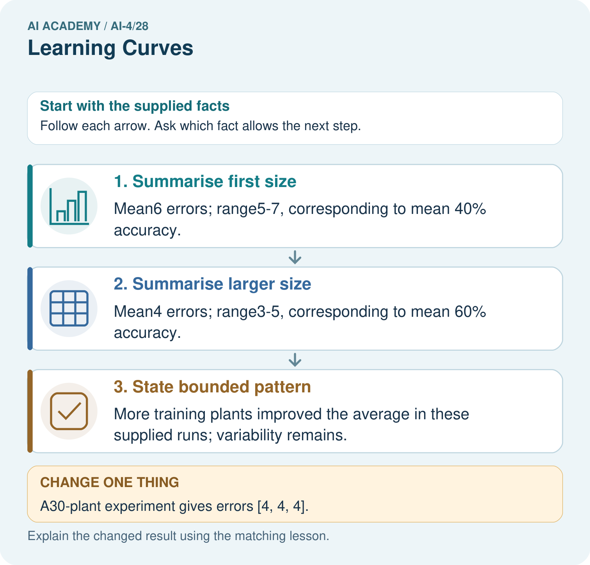
Read the picture one step at a time
Why this result follows
Read the picture in order. More training plants improved the average in these supplied runs; variability remains. The arrows show which recorded input or intermediate result each decision uses. Explain the deciding step aloud before checking the changed case; pointing to the final answer alone does not show how it follows.
What this example does not establish
These toy runs do not establish that data quantity alone caused improvement; collection quality and conditions matter.
Read the labelled picture: What comparison is valid if the validation set changes between sizes? Point to the relevant step in the picture, then write the changed result and the rule or evidence that supports it.
Change one thing: A30-plant experiment gives errors [4, 4, 4]. Predict the result before checking the explanation. What remains the same?
Student lesson · 7 of 17
Find and repair a mistake
ERROR DETECTIVE
Compare → Diagnose → Repair
Do not patch the answer. Find the earliest unsupported assumption, data problem, or experiment error.
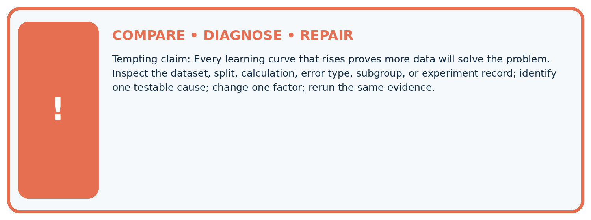
| Evidence record | Expected | Actual | Likely cause / next test |
|---|---|---|---|
| normal case | passes | ||
| boundary case | defined behavior | ||
| missing case | safe fallback | ||
| shifted case | measured limit |
Diagnose one cause and name the cleanest next experiment:
A closer explanation
Collect additional data because it addresses a known coverage need, not merely to enlarge a count. When the curve stops improving, inspect labels, features and task suitability. Keep the final test reserved while planning these changes.
Student lesson · 8 of 17
Practise together
ML STUDIO
Specify Before You Run
A trustworthy result can be reproduced from the recorded data, code, settings, and evaluation rule.

Experiment record
QUESTION + intended use + success threshold
DATA version + grouped split + leakage check
CODE/preprocessing + features + model + settings + seed
METRICS + positive class + units + denominators
PREDICTIONS + errors + subgroup slices + limitations
HUMAN reviewer + release, revise, limit, or stop decision
Write the minimum record needed to reproduce today's result:
A closer explanation
Record the actual subset identifiers and seeds for every repeat. If the validation population changes at the same time as training size, label that as a different experiment rather than attributing the difference only to more training data.
Practise with less help: Read both curves
Use workbook W2 for the connected example “Learning curves and variability”. First fill the input and rule boxes. Try the middle steps before asking for a hint. After a hint, try the next step yourself.
| Plan | Do | Check |
|---|---|---|
| What is given? Which rule or procedure applies? | Record each intermediate step. | Does the result follow? What remains unknown? |
Explain your trace to a partner. Your partner points to one step to check. Swap roles on the next case. Each person writes their own explanation.
Check your reasoning
Use the worked case for Learning curves and variability. Proposed explanation: “A final answer is enough”. Decide whether this explanation is supported. Point to the step or supplied fact that decides; explain your repair if needed.
Answer on your own before discussion. If you are unsure, say which step you need help with.
Explain the picture
What comparison is valid if the validation set changes between sizes? Point to the relevant step in the picture, then write the changed result and the rule or evidence that supports it.
This is supported practice. Keep the separately named independent case for an attempt before feedback.
Student lesson · 9 of 17
Run the investigation
EVIDENCE LAB
Predict → Run → Calculate → Interpret
Keep the test conditions fixed, record every result, and change only one planned factor.
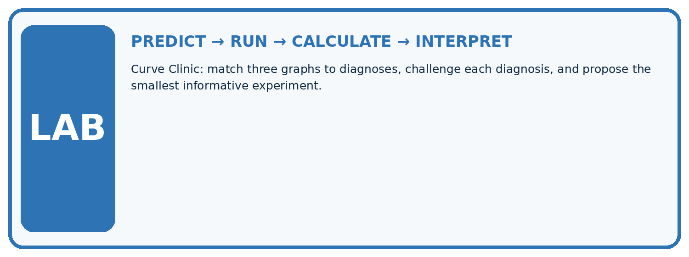
1. Write the hypothesis and expected evidence before running.
2. Curve Clinic: match three graphs to diagnoses, challenge each diagnosis, and propose the smallest informative experiment.
3. Run one normal, one boundary, one missing, and one shifted case.
4. Calculate the metric from raw counts or row-level errors.
5. Interpret what changed, what did not, and what remains unsafe or unknown.
| Case | Prediction | Actual | Calculation / evidence | Meaning / next test |
|---|---|---|---|---|
| Normal | ||||
| Boundary | ||||
| Missing | ||||
| Shifted |
Plan → try → check
Before trying: what do I expect, and why? While trying: which step could first go wrong? Afterwards: what did I actually observe, and what should change? Keep “not run” if you only traced the procedure.
Student lesson · 10 of 17
Build your understanding
MASTERY
From Knowing the Word to Owning the Idea
Move upward only when you can produce evidence without copying the example.

DEFINE Use all four terms precisely: learning curve, bias, variance, plateau.
CALCULATE Reproduce the worked evidence with units and denominator.
TRACE Explain the data, code or decision path.
DIAGNOSE Every learning curve that rises proves more data will solve the problem.
TRANSFER Solve a fresh dataset or model case.
IMPROVE Change one cause and rerun fixed evidence.
DEFEND State intended use, metric, limitation, and human responsibility.
Student lesson · 11 of 17
Connect your project
CUMULATIVE PROJECT
Responsible Plant Classifier
Every week adds one reviewable artifact to the same evidence-based capstone.
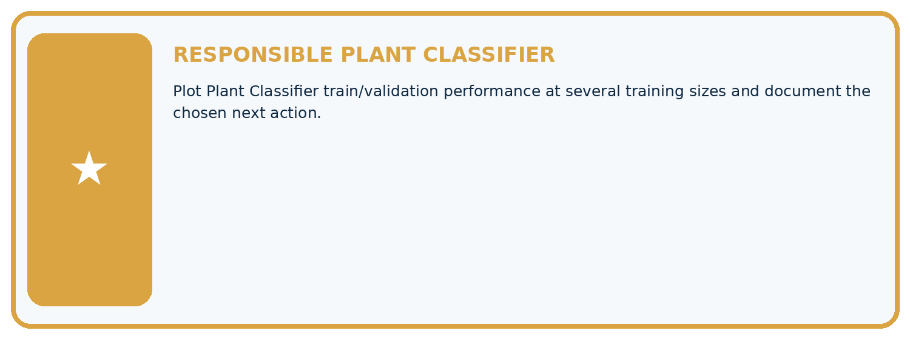
Which requirement or risk does this artifact address?
Which dataset, split, code, and metric version does it use?
What normal and shifted cases were tested?
What remains uncertain or weak?
What decision still belongs to a teacher or qualified human?
My evidence-linked project decision:
Evidence for your project
For your Responsible Plant Classifier, save the input, procedure, observed result and limitation of this check. Label this worked example as practice; use a different, previously unreviewed case when checking independent understanding.
Student lesson · 12 of 17
Show what you know
INDEPENDENT PROOF
Explain • Calculate • Transfer • Defend
Complete this with a fresh case after guided practice and compare it with the mastery criteria.
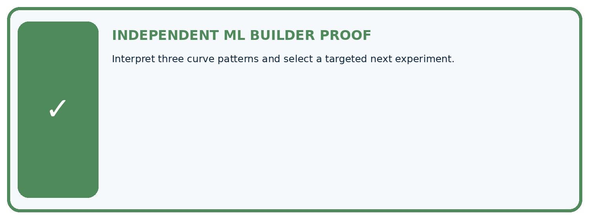
□ Define the task, feature/target roles, and intended-use boundary.
□ Show the calculation, code trace, or experiment record.
□ Test a normal case and one revealing boundary, missing, or shifted case.
□ Diagnose one failure without changing several factors at once.
□ Name a limitation, fairness concern, and the human-review action.
Independent evidence and defense:
My level: □ Not yet □ With one hint □ Independently □ I can teach and defend it
Student lesson · 13 of 17
Study a complete case
Week 28 Worked case
Use the supplied details to practise the weekly concept before attempting the independent question. This case extends the illustrated lesson.
The situation
With20,40,80 training leaves, fixed-set validation accuracy is60%,70%,78%.
The question
Interpret the curve and uncertainty.
Worked explanation
These runs improve with more data. Further representative data may help, but gains are not guaranteed. Controlled repeats reveal variability.
Explain it in your own words
Which detail supports the answer, and why does it matter?
Trace the supplied case visually
More training data on the same validation set
| Evidence or stage | Value or result |
|---|---|
| 20 | 60 |
| 40 | 70 |
| 80 | 78 |
With20,40,80 training leaves, fixed-set validation accuracy is60%,70%,78%.
Interpret the curve and uncertainty.
These runs improve with more data. Further representative data may help, but gains are not guaranteed. Controlled repeats reveal variability.
Student lesson · 14 of 17
Try a new case independently
Independent case: Apply independently
At sizes 12 and 24, validation errors are [6, 8, 7] and [4, 7, 7]. Calculate means/ranges and a careful comparison.
Attempt this case before feedback. Record any help. Earlier examples below are further practice; a case already practised with feedback cannot establish fresh transfer.
Week 28 Independent application
Close the worked explanation. Apply the idea to this different question without copying.
As training examples grow from 50 to 100 to 200, validation accuracy is 60%, 72%, 78%. What does the curve suggest, and what does it not guarantee?
My answer, with a trace, calculation or supporting evidence
Create and test
Change one relevant detail. Predict the result before testing. Include a boundary or missing-information case when it helps reveal a limit.
My changed input and expected result
Connect to your project
Plot Plant Classifier train/validation performance at several training sizes and document the chosen next action.
The evidence I will keep
Your teacher has the independent answer and scoring criteria. Complete the matching workbook week to keep your practice evidence together.
Transfer practice from the original programme
Training sizes 20,40,80 yield validation accuracies 62%,70%,73%. Is doubling again guaranteed to yield 76%? Describe a defensible next experiment.
Use feedback to improve
Attempt the independent case before hints. Record whether you worked alone, used a hint or followed a model. After feedback, fix the first unsupported step and explain why it changed. A later check uses a changed case, not a copied answer.
Student lesson · 15 of 17
Your lesson route
Start with this question: Read a learning curve with repeated-run spread rather than drawing a certainty arrow.
| By the end, I can | How I will show it |
|---|---|
| Read training-size learning curves | Explain the deciding step, show a trace or test, and state one limit. |
| Describe variability across repeated development runs | Explain the deciding step, show a trace or test, and state one limit. |
| Avoid unsupported guarantees from a trend | Explain the deciding step, show a trace or test, and state one limit. |
Remember → watch and explain → try with help → investigate → try independently → keep project evidence. Your teacher may spread this lesson across several classes.
Keep your first prediction. Compare it with what the evidence shows and explain any change.
Student lesson · 16 of 17
Finish and return
Close your notes. Explain this goal in your own words: Read training-size learning curves
If you are unsure, return to the worked picture and explain one arrow. If you are ready, change an input or assumption and justify your prediction.
Save your workbook evidence. At the next review, try a different case before opening your old answer.
Student lesson · 17 of 17
Supported practice, repair and portfolio
Use this supported practice once, in the browser or on paper. Keep the reserved independent assessment for a separate first attempt before teacher feedback.
Read a learning curve with repeated-run spread rather than drawing a certainty arrow.
Practice 1: explain the deciding evidence
Which labelled step matches this detail? More training plants improved the average in these supplied runs; variability remains.
1. State bounded pattern
2. Summarise larger size
3. Summarise first size
Hint if needed: Read the steps in the pictorial case. Match the supplied detail to the stage that performs or records it.
After your attempt, compare with the supported explanation: State bounded pattern More training plants improved the average in these supplied runs; variability remains. Read the picture in order. More training plants improved the average in these supplied runs; variability remains. The arrows show which recorded input or intermediate result each decision uses. Explain the deciding step aloud before checking the changed case; pointing to the final answer alone does not show how it follows.
Practice 2: explain the deciding evidence
Changed-case practice: A30-plant experiment gives errors [4, 4, 4]. Which conclusion is supported by the supplied facts?
1. Mean remains4; this additional size does not improve the observed mean over20 plants.
2. We can decide the result without examining the changed input or the procedure.
3. This one example guarantees correct results for every future input.
Hint if needed: Use the changed condition and the deciding step in the pictorial trace. The answer must say what follows from those facts.
After your attempt, compare with the supported explanation: Mean remains4; this additional size does not improve the observed mean over20 plants. Learning curves are measured patterns, not a guarantee of improvement at every data size.
Repair a missing building block
Review Overfitting (ai-4/27). Goal: Compare training and validation evidence for model capacity. Short practice: Does100% training accuracy prove Large was always best? Point to the relevant step in the picture, then write the changed result and the rule or evidence that supports it.. Return to this week and explain what you changed.
Review Metrics Match Consequences (ai-4/25). Goal: Apply a declared score threshold including equality. Short practice: Which labels determine the false-alarm count at threshold 0.4? Point to the relevant step in the picture, then write the changed result and the rule or evidence that supports it.. Return to this week and explain what you changed.
Review Train a Regression Model (ai-4/22). Goal: Fit a line from a declared training candidate set. Short practice: May day3’s evaluation label choose the candidate line? Point to the relevant step in the picture, then write the changed result and the rule or evidence that supports it.. Return to this week and explain what you changed.
Keep your completed work
Use Download completed work in the hosted lesson to export your answers, reflections, practice feedback and code-run evidence. Open the HTML copy to read or print it. Drafts stay in this browser when storage is available; clear drafts on a shared device.